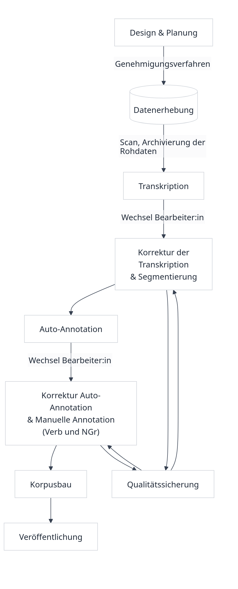

| Kapitel | Annotationsebene | Beschreibung | Beispielanfrage | Beispielergebnis auf ctok_part |
|---|---|---|---|---|
| Transkription | INT[v] | Ursprüngliche Transkriptionsspur der Interviewer:in | - | - |
| Transkription | INT[tok_int] | Tokenisierte Spur von INT[v] | - | - |
| Transkription | B02[v] | Ursprüngliche Transkriptionsspur der Teilnehmenden | - | - |
| Transkription | B02[tok_part] | Tokenisierte Spur der Teilnehmenden, hier z.B. von B02[v] | tok_part="weil" | weil |
| Transkription | [com] | Kommentarspur für alternative Transkriptions- oder Annotationsmöglichkeiten und weitere Anmerkungen | - | - |
| Transkription | B02[lay] | Layout | - | - |
| Transkription | B02[excl] | Ausgeschlossenes Material (z.B. Korrekturen, Wiederholungen) | excl="hes" | - |
| Segmentierung | B02[unit] | segmentierte Äußerungseinheiten | unit="DEC" | und er hat ein punkt für sein team |
| Segmentierung | B02[unit2] | Einschübe in Form von Äußerungseinheiten, analog zu [unit] | unit2="IRNON" | keine ahnung |
| Segmentierung | B02[subclause] | abhängige Nebensätze | subclause="SCADV" | wenn das eine e mail oder ein brief ist |
| Segmentierung | B02[subclause2] | abhängige Nebensätze | subclause2="SCREL" | wo der tee ist |
| Lemmatisierung & POS-Tagging | PART_CLEAN[ctok_part] | um [excl] und Pausenzeichen bereinigte Version von [tok_part] | ctok_part=”und” | und |
| Lemmatisierung & POS-Tagging | PART_CLEAN[lemma] | manuell korrigierte Version von [auto_lemma] | lemma="spielen" | gespielt |
| Lemmatisierung & POS-Tagging | PART_CLEAN[pos] | manuell korrigierte Version von [auto_pos] | pos="PDAT" | diese |
| Nominalgruppen | PART_CLEAN[ngr] | Nominalgruppen | ngr="NGrADJ" | mein kleiner bruder |
| Nominalgruppen | PART_CLEAN[kern] | nominale Kerne | kern="KERN" | zimmer |
| Nominalgruppen | PART_CLEAN[ngr2] | Nominalgruppen | ngr2=”NGrPREP” | dem jünge |
| Nominalgruppen | PART_CLEAN[kern2] | nominale Kerne | kern2=”DET” | dem |
| Verben | PART_CLEAN[unit_cons] | Satzkonstituenten von unit | unit_cons=”S” | er |
| Verben | PART_CLEAN[unit_stage] | Verbstellungsstufe von unit | unit_stage=”INV” | und dann kommt die mutter wahrscheinlich |
| Verben | PART_CLEAN[unit2_cons] | Satzkonstituenten von unit2 | unit2_cons="V" | warte |
| Verben | PART_CLEAN[unit2_stage] | Verbstellungsstufe von unit2 | unit2_stage=”SV” | ich glaub |
| Verben | PART_CLEAN[subclause_cons] | Satzkonstituenten von subclause | subclause_cons="O" | den spiel |
| Verben | PART_CLEAN[subclause_stage] | Verbstellungsstufe von subclause | subclause_stage=”VEND” | dass ee wir den spiel verloren haben |
| Verben | PART_CLEAN[subclause2_cons] | Satzkonstituenten von subclause2 | subclause2_cons="V" | sind |
| Verben | PART_CLEAN[subclause2_stage] | Verbstellungsstufe von subclause2 | subclause2_stage=”!SEP NOVEND” | dass eh sie sind so laut gewesen |
1 Allgemeines
1.1 Hinweise zur Korpusnutzung
SeiKo ist nach Anmeldung für die Nutzung zu Lehr- und Forschungszwecken verfügbar. Eine Übersicht zum Zugang findet sich in Kapitel 1.5.
Wenn Sie mit SeiKo arbeiten, bitten wir Sie, uns auf Publikationen aufmerksam zu machen, die wir dann sehr gerne auf der Korpuswebseite referenzieren.
1.2 Wie ist dieses Handbuch zu nutzen?
Das vorliegende Handbuch dient dazu, die Entstehung des Korpus nachzuvollziehen und die Korpusnutzung zu ermöglichen. Dafür ist es in zehn Teile gegliedert.
Kapitel 1 enthält eine allgemeine Übersicht über das Korpus, Angaben zum Korpusbau und zur Korpusnutzung sowie Hinweise zu diesem Handbuch. Kapitel 2 beschreibt das Korpusdesign und die Datenerhebung. Kapitel 3 stellt die Transkriptionskonventionen für die mündlichen und schriftlichen Daten mittels des genutzten Transkriptionstools (EXMARaLDA, Schmidt & Wörner, 2014) vor. In Tabelle 1.1 finden sich die unterschiedlichen Annotationsschritte, die in entsprechenden Kapiteln ausgeführt werden: Zunächst wird die manuelle Segmentierung auf Grundlage von Äußerungseinheiten beschrieben (Kapitel 4). Die automatisch durchgeführten und manuell korrigierten Schritte der Lemmatisierung und des POS-Taggings werden in Kapitel 5 dargestellt. Die manuelle Annotation der Nominalgruppen und der Verbstellung wird in Kapitel 6 bzw. Kapitel 7 beschrieben.1 Anschließend enthält Kapitel 8 eine Übersicht zu Maßnahmen, die zur Qualitätssicherung ergriffen wurden, und berichtet Ergebnisse der errechneten Inter-Annotator-Agreements.
In Kapitel 1.3 und Kapitel 1.4 finden sich Angaben zum Korpusumfang und eine Übersicht der Arbeitsprozesse. In Kapitel 1.5 wird der Zugang zum Korpus beschrieben. Das Kapitel enthält auch eine Übersicht der Daten und Metadaten des Korpus.
Der Anhang umfasst das genutzte Stimulusmaterial (Kapitel 11.1). Im Anhang ist außerdem der genutzte Interviewleitfaden (Kapitel 11.2) sowie eine Übersicht der in diesem Handbuch genutzten Schriftkonventionen zu finden (Kapitel 11.3). Die Nutzungsbedingungen des Korpus finden sich in Kapitel 10.
Für Nutzer:innen, die eigene Annotationsebenen ergänzen wollen, stellen wir die .exb-files sowie die von uns genutzte Pipeline zur Verfügung (vgl. Kapitel 1.5).
1.3 Korpusgröße
SeiKo umfasst insgesamt 824 Texte (SeiKo1 = 462; SeiKo2 = 362) von insgesamt 17 Lerner:innen (SeiKo1 = 8; SeiKo2 = 9). Die Größe der Teilkorpora und des Gesamtkorpus wird in Tabelle 1.2 dargestellt.
| Ebene | SeiKo1 | SeiKo2 | gesamt |
|---|---|---|---|
| tok_part | 68124 | 83719 | 151843 |
| ctok_part | 43016 | 45612 | 88628 |
| unit (Satzgefüge) | 9438 | 9259 | 18697 |
| stage (verbhaltige Sätze) | 7197 | 7447 | 14644 |
| Nominalgruppen | 6089 | 6796 | 12885 |
1.4 Übersicht des Workflows
Abbildung 1.1 stellt den Ablauf der einzelnen Arbeitsschritte bei der Erhebung und Aufbereitung der SeiKo-Daten dar.
Am Anfang des Prozesses stand die Planung des Korpusprojektes sowie die Erstellung eines Korpusdesigns. Nach dem Genehmigungsverfahren2 konnte mit der Datenerhebung begonnen werden. Anschließend an jeden Datenerhebungstermin wurden die Audiodateien abgelegt und archiviert; die geschriebenen Texte wurden eingescannt und ebenfalls archiviert. Es folgte die Transkription der Daten. Die transkribierten Daten wurden von einer anderen Bearbeiter:in im nächsten Schritt korrigiert sowie segmentiert. Anschließend wurden die Daten automatisch lemmatisiert und mit part-of-speech(POS)-Tags annotiert; hierfür wurde der TreeTagger (vgl. Schmid, 1994, 1995) verwendet. Danach wechselte erneut die Bearbeiter:in, sodass im gleichen Schritt eine Kontrolle der manuellen Segmentierung sowie der automatischen Lemmatisierung und des POS-Taggings vorgenommen werden konnte. Zudem wurden in diesem Schritt manuell Nominalgruppen und Verbkonstituenten und -stufen annotiert. Ein Teil der Daten wurde von zwei Bearbeiter:innen annotiert, sodass darauf ein Inter-Annotator-Agreement durchgeführt werden konnte; generell wurden Zweifelsfälle vor allem in anfänglichen Phasen der Segmentierung und Annotation gemeinsam diskutiert und aufgelöst. Über eine Annatto-Pipeline wird aus den einzelnen .exb-Daten und den Metadaten ein Annis-Korpus gebaut, das über eine lokale ANNIS-Schnittstelle (Krause & Zeldes, 2016)3 oder Annimate4 durchsucht werden kann.5

1.5 Veröffentlichungsorte und Nutzungbedingungen
SeiKo ist unter bestimmten Nutzungsbedingungen (Kapitel 10) nutzbar. Der Zugang kann über ZENODO beantragt werden.6
Daneben ist eine Veröffentlichung in der DAKODA-Infrastruktur geplant.7
Die Datenverarbeitungspipeline ist hier veröffentlicht: https://github.com/seiko-korpus/seiko-pipeline/
Für eine Nutzung der Audiodaten beachten Sie bitte die Angaben in den Nutzungsbedingungen.
Um der Überzeugung gerecht zu werden „that the learner’s system is worthy of study in its own right, not just as a degenerate form of the target system“ (Bley-Vroman, 1983: 4) und Lerner:innensprache nicht an einer „native norm“ (Gilquin, 2022: 87) zu messen, wurde im Korpus bewusst auf die Formulierung von Zielhypothesen verzichtet. Zugleich bleibt jede Annotation durch die ihr vorausgehenden Deutungen der sprachlichen Elemente auch interpretativ. Um auch ohne Zielhypothesen eine möglichst hohe Transparenz zu gewährleisten, sind alle Schritte der Annotation – von der Segmentierung über POS- und Lemma-Annotationen bis hin zur auf diesen Annotationen basierenden Bestimmung von Verbstellung und Nominalgruppen – im Korpus einsehbar und in diesem Handbuch umfassend beschrieben und damit in ihrer Entstehung nachvollziehbar gemacht.↩︎
Für Hinweise zu Forschungsvorhaben an Schulen und den Voraussetzungen für nachnutzbare Forschungsdaten vgl. z.B. Schwendemann et al. (2024).↩︎
Die Pipeline zur automatischen Datenaufbereitung und zum Korpusbau ist unter https://github.com/seiko-korpus/seiko-pipeline/ verfügbar.↩︎
Vgl. hierzu: https://help.zenodo.org/docs/share/access-requests/request-access/.↩︎